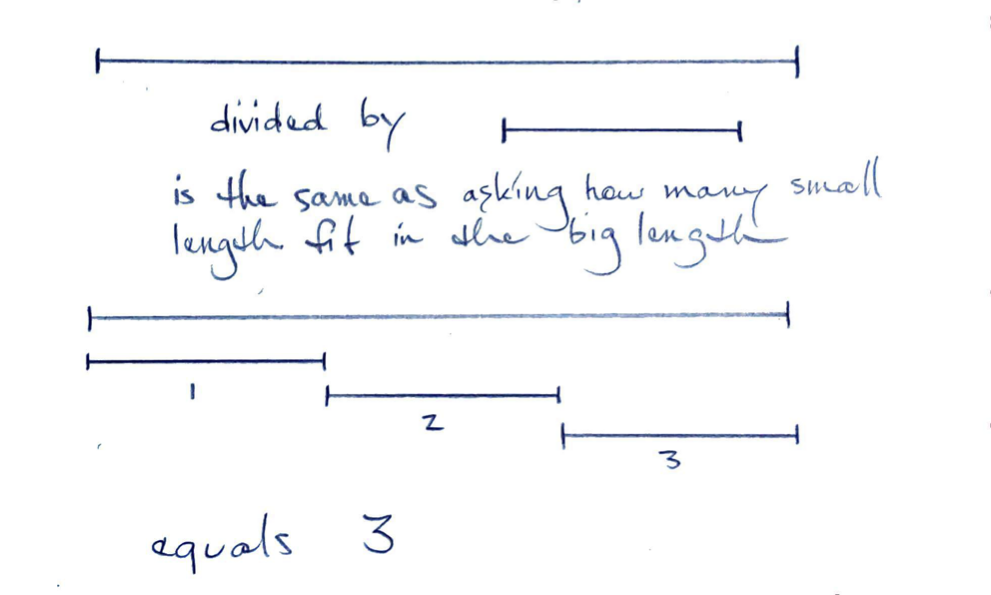
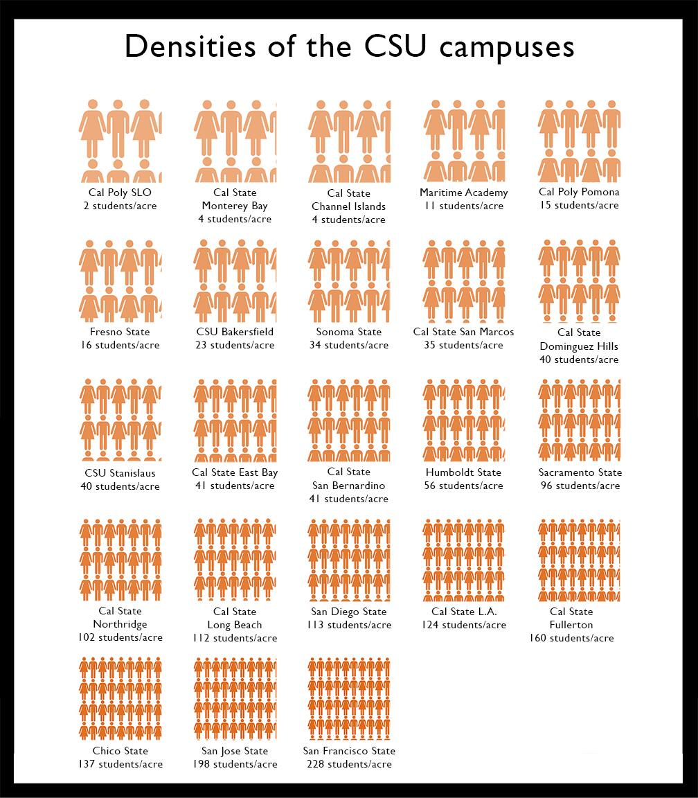
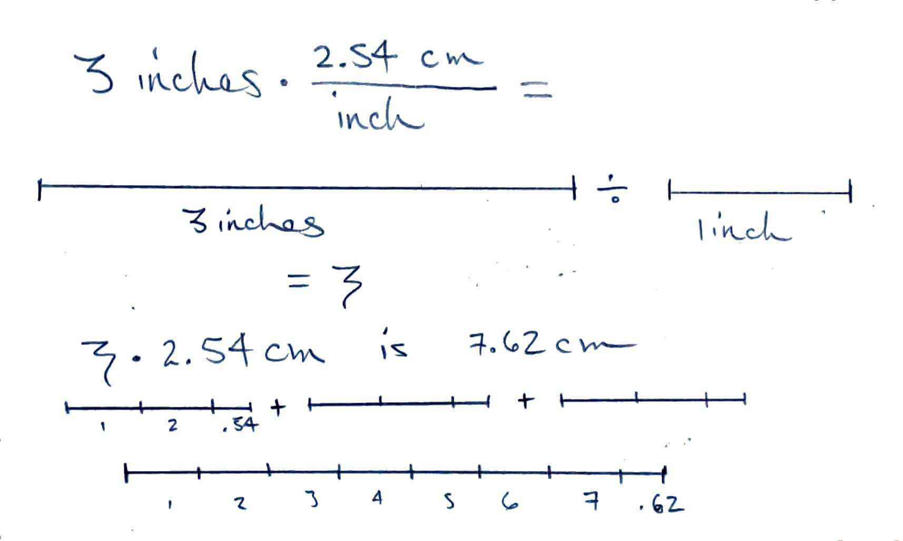

Unit Conversion
Mathematical Properties of Units
Adding and Subtracting
6 meters plus 170 pounds has no meaning since these are different dimensions.
You can add 5 feet and 3 meters if you convert to same unit first.
This concept in algebra is akin to 'combining like terms'.
Multiplying and Dividing
5 feet multiplied by 10 pounds could have meaning even though these are different dimensions. (In this case if we have a 5 feet lever with 10 pounds of force at the end, that is 50 foot-pounds of torque.)
Multiplying with Quantities
- Multiplying a length by a number gives a length
- 1 meter times 10 equals 10 meters
- 1 stride times 10 strides equals 10 strides
- Multiplying a length by a length gives an area
- 1 foot times 1 foot equals 1 square foot
$$ 2 \cdot 2 = 2^2 $$ $$ a \cdot a = a^2 $$
$$ \textrm{inch} \cdot \textrm{inch} = \textrm{inch}^2 $$
Dividing with Quantities
$$\frac{2\cdot 4}{4 \cdot 5} = \frac{2}{5} $$ $$\frac{a\cdot b}{b \cdot c} = \frac{a}{c} $$ $$\frac{\textrm{meter}\cdot \textrm{foot}}{\textrm{foot} \cdot \textrm{pound}} = \frac{\textrm{meter}}{\textrm{pound}} $$
Length by Number
When we divide a length by a number we use partition.
Quotition is meaningless since length and number are different dimensions.

Length by Length
When we divide a length by a length we use quotition, subtracting the length repeatedly.

Two units in the denominator
- Births per capita per year
- Hours per week per unit
Proportional Reasoning
- You have a mass $m$ of water and you see that when you add $E$ joules of energy the temperature raises by $T$ degrees. How much do you expect the water to raise if you add twice as much energy? Can you write this as a unit conversion?
- You have a population of $P$ people and they give birth to $B$ babies over the course of a year. How many people do you expect them to give birth to over two years? How many births in a year do you expect if you have 2 million people?
- It is widely assumed that students will spend 3 hours each week for every unit of credit they are taking in college. How many hours a week do you need to spend for a two unit class? How many hours do you need to spend over two weeks for a one-unit class?
Combinations of units
- We often combine units to express new quantities
Student density
- Students per acre
- Number per area
- Spans two orders of magnitude
Example: Units of students per acre

The main objective we are practicing in this section, is to write out our unit conversions using a mathematical notation.
Our unit conversions on paper should:
- Clearly show the number arithmetic leading to the answer
- Clearly show the unit arithmetic leading to the answer
- All equals signs must have equal quantities on both sides of the equals sign
- Follow accepted mathematical conventions
Opening Question
- Can we divide a length by a number? What do we get?
- Can we divide a length by a different length? What do we get?
Unit conversion factors
- These factors are equivalent to one
- They can have units but be dimensionless
- They are not numerically equal to one in most cases.
- Units can be crossed out
Different Dimensions
- You cannot convert a quantity with one dimension to another dimension with a unit conversion factor
- There may be a linear relationship between those two quantities that looks like a "conversion" but isn't
- For example stoichiometry uses fractions that look like conversion factors, but the dimensions are often changing
Creating a Conversion Factor
Start with a quantity equality

Now use algebra rules to create a fraction equal to one
$$ {{2.54 cm}\over{1 inch}} = {{1 inch}\over{1 inch}} $$
$$ {{2.54 cm}\over{1 inch}} = 1 $$
We can also divide both sides by 2.54 cm instead.
$$ {{1 inch}\over{2.54 cm}} = {{2.54 cm}\over{2.54 cm}} $$
$$ {{1 inch}\over{2.54 cm}} = 1 $$
Multiplying a length by these factors doesn't change the length since the factor is equal to one.
We can also thing of multiplying this factor as dividing by a length to get a number and then multiplying by an equal length with different units.

Alternative Method
To convert 10 meters to feet:
$$ 1 m = 3.28 ft $$ $$ 10 \cdot 1 m = 10 \cdot 3.28\; ft $$ $$ 10 m = 32.8 ft $$
To convert 30 miles per hour to meters per second:
$$ 1\; mile = 1609\; meters $$ $$ 1\; hour = 3600\; seconds $$
We can divide these two equations to get a combined unit conversion equality or equation.
$$ 1\; mile \div 1\; hour = 1609\; meters \div 3600\; seconds $$ $$ 1\; \textrm{mile per hour} = 0.447\; \textrm{meters per second} $$
Now we can use this for conversions.
$$ 30 \cdot 1\; \textrm{mile per hour} = 30 \cdot 0.447\; \textrm{meters per second} $$ $$ 30\; \textrm{miles per hour} = 13.4\; \textrm{meters per second} $$

Using Conversion Factors
The strategy we will use is to write the quantity with the units you are starting with on the left side of our paper and the units we want to get to on the right side of your page. Then we can fill in the unit conversions necessary to get to your desired units.
Some folks prefer to do this in steps with each conversion on a single line. Other prefer to do it straight across the page as in the examples below.
At the end ask if your quantity makes sense. Often the resulting number will be smaller or larger (though the quantity is the same).
Mass Example
Convert the quantity of 150 pounds to kilograms.
$$ 150\;{\color{blue}\cancel{\textrm{pounds}}} \cdot \frac{1\;\textrm{kilogram}} {2.2\;\color{blue}\cancel{\textrm{pound}}} = 68\;\textrm{kilograms} $$
Speed Example
Convert the quantity of 100 miles per hour to meters per second. Note that we make two unit conversions. One from miles to meters and another from hours to seconds.
Once we have this set up, we perform the computation on a calculator or other device.
$$ \frac{100\;{\color{blue}\cancel{\textrm{miles}}}} {\color{green}\cancel{\textrm{hour}}} \cdot \frac{1600\;\textrm{meters}} {\color{blue}\cancel{\textrm{mile}}} \cdot \frac{\color{green}\cancel{\textrm{hour}}} {60\;\color{purple}\cancel{\textrm{min}}} \cdot \frac{\color{purple}\cancel{\textrm{min}}} {60\;\textrm{sec}} = 44\;\frac{\textrm{meters}} {\textrm{sec}} $$
Some students prefer to perform this computation in steps.
$$ \frac{100\;{\color{blue}\cancel{\textrm{miles}}}} {\textrm{hour}} \cdot \frac{1600\;\textrm{meters}} {\color{blue}\cancel{\textrm{mile}}} = \frac{160,000\;\textrm{meters}}{\textrm{hour}} $$ $$ \frac{160,000\;\textrm{meters}}{\color{green}\cancel{\textrm{hour}}} \cdot \frac{\color{green}\cancel{\textrm{hour}}} {60\;\textrm{min}} = \frac{2667\;\textrm{meters}}{\textrm{min}} $$ $$ \frac{2667\;\textrm{meters}}{\color{purple}\cancel{\textrm{min}}} \cdot \frac{\color{purple}\cancel{\textrm{min}}} {60\;\textrm{sec}} = 44\;\frac{\textrm{meters}} {\textrm{sec}} $$
"Per Per" Example
In August 2021, Sonoma County is recording 20 new cases per day per 100,000 people. If we have a population of 5,000 people, how many cases per week do we expect?
$$ \frac{20\;\textrm{cases}}{{\color{green}\cancel{\textrm{day}}}\cdot 100,000\;\color{blue}\cancel{\textrm{people}}} \cdot 5,000\;{\color{blue}\cancel{\textrm{people}}} \cdot \frac{7\;\color{green}\cancel{\textrm{day}}}{\textrm{week}} = 7\;\textrm{cases per week} $$
It is recommended that students spend in total 3 hours per week per unit. Let's assume all of our classes are 4-units, we can then convert this to minutes per day per class.
$$ \frac{3\;\color{blue}\cancel{\textrm{hours}}} {\color{purple}\cancel{\textrm{week}}\cdot\color{green}\cancel{\textrm{unit}}} \cdot \frac{60\;\textrm{min}} {\color{blue}\cancel{\textrm{hour}}} \cdot \frac{4\;\color{green}\cancel{\textrm{units}}} {\textrm{class}} \cdot \frac{\color{purple}\cancel{\textrm{week}}} {7\;\textrm{days}} = 103\; \frac{\textrm{minutes}} {\textrm{day}\cdot\textrm{class}} $$
Two units in the denominator
This is often confusing. A few thought experiments can help.
- Is eggs per chicken per day the same as eggs per day per chicken?
Multiple Units
In the example above, you may see the quantity written in several different ways:
- 3 hours per week per unit
- 3 hours/week/unit
- 3 hours/week $\cdot$ unit
- this one has an implicit parenthesis around the week and unit
Another example is that humans need approximately 2000 kcalories per person per day.
Food Example
Estimation: How many calories worth of food does the caf need to buy each week?
A unit could be calories per student per week.
Temperature
Temperature conversions are different depending on if we are converting differences or absolute temperatures.
We can see a similar issue with distances and positions. (The mathematical term for this is an affine space.)
We can add two distances together. If it is 8 miles to drive from Santa Rosa to Rohnert Park and 12 miles to drive from Rohnert Park to Petaluma, it is 20 miles to drive from Santa Rosa to Petaluma.
However, adding (the positions of) Santa Rosa and Petaluma doesn't mean anything.
Similarly, if it is 70 degrees Fahrenheit here and 80F somewhere else, adding those temperatures together doesn't mean anything.